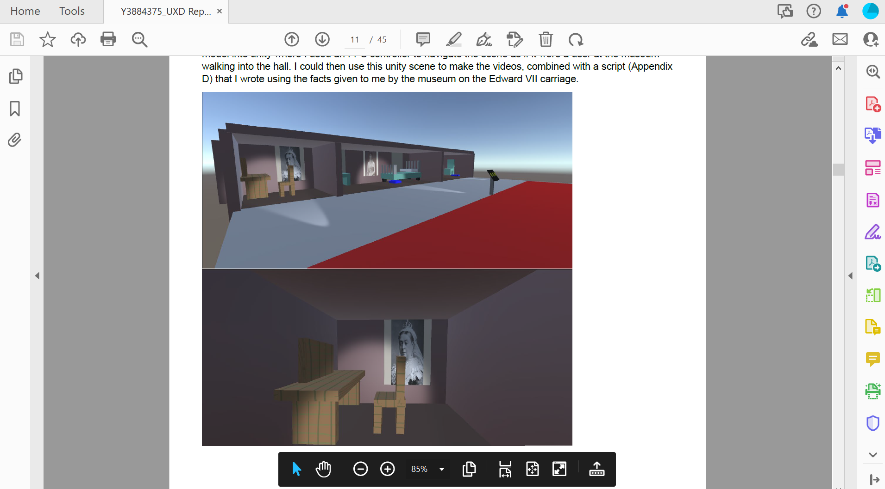

National Railway Museum Exhibit
My favourite module during my second year was User Experience Design. The main project we were challenged with was to design a new interactive exhibit for the National Railway Museum in York. Throughout this module we were taught a lot about the whole process of design, starting with intial personas and surveys, to user journey maps and then prototyping. We experimented with design software, specifically Adobe XD which I have become confident in using to prototype. To begin this project I came up with an initial persona based on research we recieved from the museum and then also used this data to create sketches and a user journey map for my idea.


After this initial planning, I began creating my project using both Unity and Adobe XD. I used my Unity skills that I learnt in a previous module to create the model of the train and Maya to make and colour the furnishings so that I could effectively show the finished product. My finished idea was to make the Royal Carriage exhibit more interactive by using screens and projectors to make the different royal characters seem as if they were speaking, as displayed in the video here.

I then used Adobe XD in order to create the screens that would be accompanying the train. I experimented with different colours and fonts, which I decided on after doing consumer research around the options. I drew out lots of sketches surrounding what the screens would look like and planned user journey maps that helped me to plan how they would interact with the system I created.